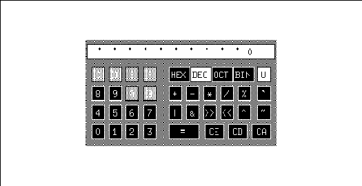

Xlib Programming Manual (O'Reilly & Associates, Inc.) |
Our basic window program in Chapter 3, "Basic Window Program," did not do all the things an application normally should do. We should have more complete communication with the window manager, parse the command line, and merge these options with the user's defaults to set up user-preferred colors and miscellaneous options. This chapter describes and demonstrates these techniques with a real application, basecalc.
The basecalc application is a programmer's calculator that allows integer calculations in binary, octal, decimal, and hexadecimal and conversions between these bases. It is not quite as complicated as xcalc, the standard calculator for X, but it demonstrates X techniques just as well. basecalc also does base conversions, logical operations, and unsigned arithmetic, which xcalc does not.
Only the sections of the program that illustrate X concepts are shown and described in this chapter. The entire program is shown in Appendix D, The basecalc Application.
This program has one characteristic that is not strictly
correct in the X environment. It has only one allowable size. If the window
manager refuses its request for that size or its main window is reduced
in size by the user, it should print a message indicating that it cannot
operate in that space. Luckily, most window managers honor the application's
size hints and refuse to resize the window.
See the Preface for information on how to get the example source code.
The basecalc application on the screen

The long horizontal window along the top of the calculator is the display, in which the values punched on the calculator and the results are displayed. The digits (0 to 9) and letters (A to F) in the left-hand portion of the calculator keypad are for entering values. The top row of the right-hand portion of the keypad is for base selection. These can be used either to set the current base of calculations or to convert a value between bases. Only one of the base indicators is highlighted at a time.
Only valid numbers in the current base are allowed to be entered. Valid pads are black, while invalid ones are light gray. When a pad is triggered by pressing a pointer button, it flashes white, and the operation or value indicated by the pad is executed if the pointer button is released in the same pad. The pad also responds to the pointer entering or leaving the window while a pointer button is pressed.
The calculator also operates from the keyboard. Numbers, letters, and special characters can be typed in (or pasted from another application) to represent all the functions except Clear Entry (CE). The Backspace key also performs this function.
This application runs on any X system, since it uses only the colors black and white. It achieves the appearance of different levels of gray by creating a pattern with differing amounts of black and white. It also provides command line arguments for colors and uses them if the user specifies them and if connected to a color screen.
Here is the list of available functions and how they are used. If you do not plan to be using basecalc, skip to Section 14.2, "Include Files," because you will not need to know how to use basecalc from the desktop.
All operations work in all bases. You may shift bases at any point in any calculation. The last of any series of consecutive operators pressed will be acted upon.
basecalc -- include files
The constant definitions and global variables declared or defined in ./basecalc.h are shown above the routines in which they are used in the basecalc example program. You can take a look at the entire include file in Appendix D, The basecalc Application.#include <X11/Xlib.h> #include <X11/Xutil.h> #include <X11/Xresource.h> #include <X11/cursorfont.h> #include <stdio.h> #ifdef SysV #include <termio.h> #else #include <sgtty.h> #include <sys/ttychars.h> #endif SysV #include <ctype.h> #include <pwd.h> /* Global declarations file for this application */ #include "basecalc.h"
basecalc -- the main
char myDisplayName[256];
/* X11 Integer Programmer's Calculator with base conversions */
main (argc, argv)
int argc;
register char *argv[];
{
/* So we can use the resource manager data merging functions */
XrmInitialize();
/* Parse command line first so we can open display, store any
* options in a database */
parseOpenDisp (&argc, argv);
/* Get server defaults, program defaults, .Xdefaults;
* merge them and finally the command line */
mergeDatabases();
/* Extract values from database and convert to form usable
* by this program */
extractOpts ();
/* Load font, make pixmaps, set up arrays of windows */
initCalc ();
/* Get keyboard settings for interrupt, delete, etc. */
initTty ();
/* Make a standard cursor */
makeCursor ();
/* Set standard properties, create and map windows */
makeWindows (argc, argv);
/* Get events */
takeEvents ();
/* Bow out gracefully */
XCloseDisplay(display);
exit (1);
}
initTty is not shown in this chapter, but it is included
in Appendix D, The basecalc Application. It simply performs a few
system calls to determine which keys are being used for erase, delete,
and interrupt.
The following sections describe each routine called in
the main. Each section will begin with a brief description of the routine,
followed by the declarations from basecalc.h that are needed with
that routine and then the code.
Note that XGetDefault(), described in Chapter 13, "Managing User Preferences," only deals with some of this complexity. It does not read the XA_RESOURCE_MANAGER property, and it does not merge in the command line arguments. That is why, in this example, we have used a different, more thorough technique, using the native resource manager calls.
Example 14-3 shows a sample resource database file with two options for basecalc.
A sample .Xdefaults file
For a complete description of preference matching rules, see Chapter 13, "Managing User Preferences." The basecalc.base preference sets the base with which the calculator will start and is here specified as binary (base 2). The basecalc.unsigned preference specifies whether the calculator should start up in signed mode or unsigned mode.basecalc.base: 2 basecalc.unsigned: False
basecalc -- the parseOpenDisp routine
/* Global variables */
Display *display;
int screen_num;
char myDisplayName[256];
/* Command line options table; we don't do anything with many
* of these resources, but the program is ready for expansion
* to allow variable sizes, fonts, etc. */
#define GEOMETRY "*geometry"
#define ICONGEOMETRY "*iconGeometry"
#define UNSIGNED "*unsigned"
#define BASE "*base"
#define ICONSTARTUP "*iconStartup"
static int opTableEntries = 25;
static XrmOptionDescRec opTable[] = {
{"-unsigned", UNSIGNED, XrmoptionNoArg, (caddr_t) "off"},
{"-x", BASE, XrmoptionNoArg, (caddr_t) "16"},
{"-hex", BASE, XrmoptionNoArg, (caddr_t) "16"},
{"-dec", BASE, XrmoptionNoArg, (caddr_t) "10"},
{"-oct", BASE, XrmoptionNoArg, (caddr_t) "8"},
{"-binary", BASE, XrmoptionNoArg, (caddr_t) "2"},
{"-geometry", GEOMETRY, XrmoptionSepArg, (caddr_t) NULL},
{"-iconGeometry", ICON_GEOMETRY, XrmoptionSepArg, (caddr_t) NULL},
{"-iconic", ICONSTARTUP, XrmoptionNoArg, (caddr_t) "on"},
{"-background", "*background", XrmoptionSepArg, (caddr_t) NULL},
{"-bg", "*background", XrmoptionSepArg, (caddr_t) NULL},
{"-fg", "*foreground", XrmoptionSepArg, (caddr_t) NULL},
{"-foreground", "*foreground", XrmoptionSepArg, (caddr_t) NULL},
{"-xrm", NULL, XrmoptionResArg, (caddr_t) NULL},
{"-display", ".display", XrmoptionSepArg, (caddr_t) NULL},
/* Remainder not currently supported: */
{"-bd", "*borderColor", XrmoptionSepArg, (caddr_t) NULL},
{"-bordercolor", "*borderColor", XrmoptionSepArg, (caddr_t) NULL},
{"-borderwidth", ".borderWidth", XrmoptionSepArg, (caddr_t) NULL},
{"-bw", ".borderWidth", XrmoptionSepArg, (caddr_t) NULL},
{"-fn", "*font", XrmoptionSepArg, (caddr_t) NULL},
{"-font", "*font", XrmoptionSepArg, (caddr_t) NULL},
{"-name", ".name", XrmoptionSepArg, (caddr_t) NULL},
{"-title", ".title", XrmoptionSepArg, (caddr_t) NULL},
};
static XrmDatabase commandlineDB;
/* Get command line options */
parseOpenDisp (argc, argv)
int *argc;
register char *argv[];
{
XrmValue value;
char *str_type[20];
myDisplayName[0] = '\0';
XrmParseCommand(&commandlineDB, opTable, opTableEntries, argv[0],
argc, argv);
/* Check for any arguments left */
if (*argc != 1) Usage();
/* Get display now, because we need it to get other databases */
if (XrmGetResource(commandlineDB, "basecalc.display",
"Basecalc.Display", str_type, &value)== True) {
(void) strncpy(myDisplayName, value.addr, (int) value.size);
}
/* Open display */
if (!(display = XOpenDisplay(myDisplayName))) {
(void) fprintf(stderr, "%s: Can't open display '%s'\n",
argv[0], XDisplayName(myDisplayName));
exit(1);
}
screen_num = DefaultScreen(display);
visual = DefaultVisual(display, screen_num);
colormap = DefaultColormap(display, screen_num);
}
The large options table (opTable) defines all the
command line arguments that XrmParseCommand() is going to look for.
It describes not only what flag to look for but also the style of each
option. Some options are a simple flag, others are a flag followed by a
value with no space or with a space, and so on. The options table also
specifies what to call each option when searching for it in the database.
Example 14-5 shows the structure that defines the options table.
XrmOptionDescRec, XrmOptionDescList, and XrmOptionKind declarations
typedef struct {
char *option; /* Option specification string in argv */
char *resourceName; /* Binding and resource name (without
* application name) */
XrmOptionKind argKind; /* Which style of option it is */
caddr_t value; /* Value to provide if XrmoptionNoArg */
} XrmOptionDescRec, *XrmOptionDescList;
typedef enum {
XrmoptionNoArg, /* Value is specified in
* OptionDescRec.value */
XrmoptionIsArg, /* Value is the option string itself */
XrmoptionStickyArg, /* Value is chars immediately following
* option */
XrmoptionSepArg, /* Value is next argument in argv */
XrmoptionResArg, /* Resource and value in next argument
* in argv */
XrmoptionSkipArg, /* Ignore this option and next argument
* in argv */
XrmoptionSkipLine /* Ignore this option and the rest of
* argv */
} XrmOptionKind;
The styles of command line arguments allowed are as follows:
If all the options were correctly parsed, then it is time to extract the display name so that we can connect with the display. We need to connect now because we want to get the user's resource database from the server to merge with the command line arguments we already have. If there was no display specified on the command line, we use NULL as usual to connect to the server indicated in the UNIX environment variable DISPLAY. We set the global variable screen_num to the default screen number so that we can use it in future macro calls.
It would be possible (and actually preferable) to search the other local databases, namely the app-defaults/* and .Xdefaults files, for a display name before connecting to the display. This was not done in basecalc because of an oversight.
basecalc -- the GetUsersDataBase routine
Display *display;
XrmDatabase rDB; /* For final merged database */
/* Get program's and user's defaults */
mergeDatabases()
{
XrmDatabase homeDB, serverDB, applicationDB;
char filenamebuf[1024];
char *filename = &filenamebuf[0];
char *environment;
char *classname = "Basecalc";
char name[255];
(void) strcpy(name, "/usr/lib/X11/app-defaults/");
(void) strcat(name, classname);
/* Get application defaults file, if any */
applicationDB = XrmGetFileDatabase(name);
(void) XrmMergeDatabases(applicationDB, &rDB);
/* Merge server defaults, created by xrdb, loaded as a
* property of the root window when the server initializes
* and loaded into the display structure on XOpenDisplay;
* if not defined, use .Xdefaults */
if (XResourceManagerString(display) != NULL) {
serverDB = XrmGetStringDatabase(XResourceManagerString
(display));
} else {
/* Open .Xdefaults file and merge into existing database */
(void) GetHomeDir(filename);
(void) strcat(filename, "/.Xdefaults");
serverDB = XrmGetFileDatabase(filename);
}
XrmMergeDatabases(serverDB, &rDB);
/* Open XENVIRONMENT file or, if not defined, the .Xdefaults,
* and merge into existing database */
if ((environment = getenv("XENVIRONMENT")) == NULL) {
int len;
environment = GetHomeDir(filename);
(void) strcat(environment, "/.Xdefaults-");
len = strlen(environment);
(void) gethostname(environment+len, 1024-len);
}
homeDB = XrmGetFileDatabase(environment);
XrmMergeDatabases(homeDB, &rDB);
/* Command line takes precedence over everything */
XrmMergeDatabases(commandlineDB, &rDB);
}
XrmGetFileDatabase() reads the application defaults
file and loads it into a database, returning a pointer to the database.
This database should contain the default values for each configurable variable
used in the program. This file should look just like a user preference
file, and it should parallel every option in the command line options table.
In case this file is unavailable, the application should also have hardcoded
defaults for all these values, but it should not have to use them.
Note that Example 14-6 gets the user's database set by xrdb from the value returned by the XResourceManagerString() function. This function returns a pointer to a string stored in the Display structure. This string is set by XOpenDisplay() to the value of the XA_RESOURCE_MANAGER property on the root window of screen 0. This string can easily be translated into a database with XrmGetStringDatabase().
basecalc -- the extractOpts routine
extractOpts()
{
char *str_type[20];
char buffer[20];
long flags;
XrmValue value;
int x, y, width, height;
XColor screen_def;
/* Get geometry */
if (XrmGetResource(rDB, "basecalc.geometry",
"Basecalc.Geometry", str_type, &value)== True) {
(void) strncpy(Geostr, value.addr, (int) value.size);
} else {
Geostr[0] = NULL;
}
if (XrmGetResource(rDB, "basecalc.iconGeometry",
"Basecalc.IconGeometry", str_type, &value)== True) {
(void) strncpy(iconGeostr, value.addr, (int) value.size);
} else {
iconGeostr[0] = NULL;
}
if (XrmGetResource(rDB, "basecalc.unsigned", "Basecalc.Unsigned",
str_type, &value)== True)
if (strncmp(value.addr, "False", (int) value.size) == 0)
Unsigned = False;
if (XrmGetResource(rDB, "basecalc.base", "Basecalc.Base",
str_type, &value)== True) {
(void) strncpy(buffer, value.addr, (int) value.size);
buffer[value.size] = NULL;
Base = atoi(buffer);
} else Base = 10;
if (XrmGetResource(rDB, "basecalc.foreground",
"Basecalc.Foreground", str_type, &value)== True) {
(void) strncpy(buffer, value.addr, (int) value.size);
if (XParseColor(display, colormap, buffer,
&screen_def) == 0) {
(void) fprintf(stderr, "basecalc: fg color \
specification %s invalid", buffer);
foreground = BlackPixel(display, screen_num);
} else {
/* Accessing visual is cheating, but in the
* interests of brevity, we'll do it anyway */
if ((visual->class == StaticGray) ||
(visual->class == GrayScale))
foreground = BlackPixel(display, screen_num);
else if (XAllocColor(display, colormap, &screen_def) ==
0) {
foreground = BlackPixel(display, screen_num);
(void) fprintf(stderr, "basecalc: couldn't allocate \
color: %s.\n", buffer);
}
else
foreground = screen_def.pixel;
}
} else {
foreground = BlackPixel(display, screen_num);
}
if (XrmGetResource(rDB, "basecalc.background",
"Basecalc.Background", str_type, &value)== True) {
(void) strncpy(buffer, value.addr, (int) value.size);
if (XParseColor(display, colormap, buffer,
&screen_def) == 0) {
(void) fprintf(stderr, "basecalc: bg color \
specification %s invalid", buffer);
background = WhitePixel(display, screen_num);
} else {
if ((visual->class == StaticGray) ||
(visual->class == GrayScale))
background = WhitePixel(display, screen_num);
else if (XAllocColor(display, colormap, &screen_def) ==
0) {
background = WhitePixel(display, screen_num);
(void) fprintf(stderr, "basecalc: couldn't allocate \
color: %s.\n", buffer);
}
else
background = screen_def.pixel;
}
} else {
background = WhitePixel(display, screen_num);
}
/* One last check to make sure the colors are different! */
if (background == foreground) {
background = WhitePixel(display, screen_num);
foreground = BlackPixel(display, screen_num);
}
/* Get window geometry information */
if (Geostr != NULL) {
flags = XParseGeometry(Geostr,
&x, &y, &width, &height);
if ((WidthValue|HeightValue) & flags)
Usage ();
if (XValue & flags) {
if (XNegative & flags)
x = DisplayWidth(display, screen_num) +
x - sizehints.width;
sizehints.flags |= USPosition;
sizehints.x = x;
}
if (YValue & flags) {
if (YNegative & flags)
y = DisplayHeight(display, screen_num) +
x - sizehints.width;
sizehints.flags |= USPosition;
sizehints.y = y;
}
}
/* Get icon geometry information */
if (iconGeostr != NULL) {
iconGeostr[0] = '=';
flags = XParseGeometry(iconGeostr,
&x, &y, &width, &height);
if ((WidthValue|HeightValue) & flags)
Usage ();
if (XValue & flags) {
if (XNegative & flags)
x = DisplayWidth(display, screen_num) +
x - iconsizehints.width;
iconsizehints.flags |= USPosition;
wmhints.flags |= IconPositionHint;
wmhints.icon_x = x;
iconsizehints.x = x;
}
if (YValue & flags) {
if (YNegative & flags)
y = DisplayHeight(display, screen_num) +
x - iconsizehints.width;
iconsizehints.flags |= USPosition;
wmhints.flags |= IconPositionHint;
wmhints.icon_y = y;
iconsizehints.y = y;
}
}
}
The variables that are used to access the data returned from
the database are background, Base, iconGeostr, iconOnly,
foreground, Geostr, and Unsigned. The routine then
calls XrmGetResource() for each resource, which places the data
which resulted from the combination of the command line and the resource
database into user-accessible variables. Geostr and iconGeostr
are used to set up the window manager size hints. Later in the code, the
variables background, Base, foreground, iconOnly,
and Unsigned will also be used.
The next step is to get the standard geometry strings from the database, parse them, and use these or the defaults to set the window manager hints to match. This program repeats this process for the main window and for the icon. Strictly speaking, it is not necessary to set window manager hints for the icon, and they are not used for that purpose in this program.
XParseGeometry() returns a bitmask which indicates which parts of the geometry string were actually set on the command line or in the resource database. There are symbols to indicate each bit in this mask, and they are:
basecalc -- the Usage routine
/* Print message to stderr and exit */
Usage ()
{
fprintf (stderr,
"%s: [-iconic] [-unsigned] [-hex|x|dec|oct|binary]\
[-display <display>] [-geometry <geometrystring>]\
[-iconGeometry <icongeometrystring>\n",
calcName ? calcName : "basecalc");
exit (1);
}
Again, we'll begin with the declarations that are used in the routine.
basecalc -- declarations for initCalc
/* Pattern for disabled buttons (Light Gray) */
#define lgray_width 16
#define lgray_height 16
static char lgray_bits[] = {
0x88, 0x88, 0x22, 0x22, 0x88, 0x88, 0x22, 0x22,
0x88, 0x88, 0x22, 0x22, 0x88, 0x88, 0x22, 0x22,
0x88, 0x88, 0x22, 0x22, 0x88, 0x88, 0x22, 0x22,
0x88, 0x88, 0x22, 0x22, 0x88, 0x88, 0x22, 0x22};
/* Background pattern for calculator (Dark Gray) */
#define gray_width 16
#define gray_height 16
static char gray_bits[] = {
0xaa, 0xaa, 0x55, 0x55, 0xaa, 0xaa, 0x55, 0x55,
0xaa, 0xaa, 0x55, 0x55, 0xaa, 0xaa, 0x55, 0x55,
0xaa, 0xaa, 0x55, 0x55, 0xaa, 0xaa, 0x55, 0x55,
0xaa, 0xaa, 0x55, 0x55, 0xaa, 0xaa, 0x55, 0x55};
#define WHITE 0
#define BLACK 1
#define DARKGRAY 2
#define LIGHTGRAY 3
int pressedColor = WHITE;
int unpressedColor = BLACK;
int disabledColor = LIGHTGRAY;
int displayColor = WHITE;
#define NBUTTONS 38
struct windata {
int color; /* Color */
char *text; /* Pointer to the text string */
int x; /* x coordinate of text */
int y; /* y coordinate of text */
int value; /* 0 to 16 for number, symbol for operator */
int type; /* Digit, operator, conversion, or special */
} windata[NBUTTONS] = {
{ 1, " 0 ", 2, 3, 0, WTYP_DISP },
{ 0, "C", 5, 3, 12, WTYP_DIGIT },
{ 0, "D", 5, 3, 13, WTYP_DIGIT },
{ 0, "E", 5, 3, 14, WTYP_DIGIT },
{ 0, "F", 5, 3, 15, WTYP_DIGIT },
{ 0, "8", 5, 3, 8, WTYP_DIGIT },
{ 0, "9", 5, 3, 9, WTYP_DIGIT },
{ 0, "A", 5, 3, 10, WTYP_DIGIT },
{ 0, "B", 5, 3, 11, WTYP_DIGIT },
{ 0, "4", 5, 3, 4, WTYP_DIGIT },
{ 0, "5", 5, 3, 5, WTYP_DIGIT },
{ 0, "6", 5, 3, 6, WTYP_DIGIT },
{ 0, "7", 5, 3, 7, WTYP_DIGIT },
{ 0, "0", 5, 3, 0, WTYP_DIGIT },
{ 0, "1", 5, 3, 1, WTYP_DIGIT },
{ 0, "2", 5, 3, 2, WTYP_DIGIT },
{ 0, "3", 5, 3, 3, WTYP_DIGIT },
{ 0, "CA", 6, 3, OPR_CLRA, WTYP_SPECIAL },
{ 0, "CE", 6, 3, OPR_CLRE, WTYP_SPECIAL },
{ 0, "CD", 6, 3, OPR_CLRD, WTYP_SPECIAL },
{ 0, "=", 17, 2, OPR_ASGN, WTYP_OPERATOR },
{ 0, "+", 5, 3, OPR_ADD, WTYP_OPERATOR },
{ 0, "-", 5, 3, OPR_SUB, WTYP_OPERATOR },
{ 0, "*", 5, 4, OPR_MUL, WTYP_OPERATOR },
{ 0, "/", 5, 3, OPR_DIV, WTYP_OPERATOR },
{ 0, "%", 5, 3, OPR_MOD, WTYP_OPERATOR },
{ 0, "|", 5, 3, OPR_OR, WTYP_OPERATOR },
{ 0, "&", 5, 3, OPR_AND, WTYP_OPERATOR },
{ 0, ">>",1, 3, OPR_SHR, WTYP_OPERATOR },
{ 0, "<<",0, 3, OPR_SHL, WTYP_OPERATOR },
{ 0, "^", 5, 3, OPR_XOR, WTYP_OPERATOR },
{ 0, "HEX", 2, 3, 16, WTYP_CONVERSION },
{ 0, "DEC", 2, 3, 10, WTYP_CONVERSION },
{ 0, "OCT", 2, 3, 8, WTYP_CONVERSION },
{ 0, "BIN", 2, 3, 2, WTYP_CONVERSION },
{ 0, "U", 5, 3, OPR_UNS, WTYP_SPECIAL },
{ 0, "`", 5, 3, OPR_NEG, WTYP_OPERATOR },
{ 0, "~", 5, 3, OPR_NOT, WTYP_OPERATOR },
};
/* Font for all numbers and text */
char *myFontName = "8x13";
/* For keeping track of colors */
GC fgGC;
GC bgGC;
The data in lgray and gray are for making pixmaps
for tiling in various shades of gray. This program is written to operate
correctly on any kind of display. If the display is simple monochrome without
grays, you can still get gray shades by creating different pixmaps with
slightly different ratios of black and white pixels. The light gray pixmap
is used for disabled pads, which are not valid in the current base. The
dark gray pixmap is used for the background of the calculator. Simple pixel
values of BlackPixel() and WhitePixel() are used for valid
and selected pads. The symbols BLACK, WHITE, DARKGRAY,
and LIGHTGRAY are defined to clarify the code. If foreground and
background colors are specified on the command line, they will also be
used in the pixmaps, and their colors will be mixed.
The windata structure provides information about each subwindow on the calculator: the color, text, position relative to the individual pad subwindows, value (digit or symbol), and type of pad. The first window in the list of data is the display window, where the entered values and results are shown. As you can see, the data for all the windows is initialized, except for the color, which is set in initCalc. None of these values change during the operation of the program except the color and the value in the display window.
The type member of windata indicates which of the four major classes of pads the window fits in. These are WTYP_CONVERSION, WTYP_DIGIT, WTYP_OPERATOR, and WTYP_SPECIAL and represent digits, operators, conversions (bases), and special keys. The special keys are Clear All (CA), Clear Digit (CD), Clear Entry (CE), and Unsigned (U). Each pad within each type is identified with the value member of windata. For digits, this is the digit itself, and for operators, conversions, and special keys, it is a symbol representing each key.
Last but not least, fgGC and bgGC are two GCs which are used to save the colors between which the pads are changed. The pads have to change back and forth between black and white frequently, and having one GC for each reduces the traffic to the server.
Without further ado, Example 14-10 shows the initCalc routine.
basecalc -- the initCalc routine
/* Initialize calculator options */
initCalc ()
{
register int win;
register int found = -1;
XGCValues values;
extern char lgray_bits[];
if ((theFont = XLoadQueryFont (display, myFontName)) == NULL) {
(void) fprintf(stderr, "basecalc: can't open font %s\n",
myFontName);
exit(-1);
}
/* Make the utility pixmaps */
grayPixmap = makePixmap(gray_bits, gray_width, gray_height);
lgrayPixmap = makePixmap(lgray_bits, lgray_width, lgray_height);
/* Make the utility gc's */
values.font = theFont->fid;
values.foreground = foreground;
fgGC = XCreateGC(display, DefaultRootWindow(display),
GCForeground|GCFont, &values);
values.foreground = background;
values.function = GXcopy;
bgGC = XCreateGC(display, DefaultRootWindow(display),
GCForeground|GCFont|GCFunction, &values);
/* Loop through buttons, setting disabled buttons
* to Color Light Gray; also, find the window which
* corresponds to the starting display base; also
* add ascent to y position of text */
for (win = 1; win < NBUTTONS; win++) {
if (windata[win].type == WTYP_CONV &&
windata[win].value == Base) {
found = win;
} else
if (windata[win].type == WTYP_DIG &&
windata[win].value >= Base) {
windata[win].color = disabledColor;
} else
if (windata[win].type == WTYP_SPEC &&
windata[win].value == OPR_UNS) {
if (Unsigned)
windata[win].text = "U";
else
windata[win].text = "S";
windata[win].color = pressedColor;
}
else
windata[win].color = unpressedColor;
windata[win].y += theFont->max_bounds.ascent;
}
windata[0].y += theFont->max_bounds.ascent;
if (found >= 0) {
winBase = found;
windata[found].color = pressedColor;
} else {
(void) fprintf(stderr, "basecalc: can't use base %d\n",
Base);
exit(-1);
}
windata[0].color = displayColor;
}
The first action in this routine is to load the font. The
process of loading and using a font should be familiar to you from the
discussion and examples in Chapter 6, "Drawing Graphics and Text."
The routine then calls makePixmap to make pixmaps out of the lgray and gray data in the include file. This routine calls XCreatePixmapFromBitmapData() to convert a single-plane pixmap into a pixmap with depth suitable for tiling. Then initCalc creates two GCs, each with a different foreground color. These are used later in drawButton.
Now initCalc begins a loop through all the window data set up in the array of structures called windata. The first operation within the loop is to adjust the position of text in each button according to the font information. Then the pad colors are set according to the Base and Unsigned variables. These variables have default values (10 and U), but they may have been updated according to the command line or the resource database.
Finally, initCalc sets the color of the display
window and the current base pad. If the base is not valid, this will not
have been caught until now, so the routine prints out a message and exits.
There is nothing in makeWindows that you have not
seen in previous examples, so we will not show it here. Look at the code
in Appendix D, The basecalc Application, if you are interested.
basecalc -- the selectEvents routine
selectEvents ()
{
int win;
/* Window behind calculator */
XSelectInput (display, calcWin, KeyPressMask|KeyReleaseMask);
/* Where results are drawn */
XSelectInput (display, dispWin, ExposureMask);
/* Pad windows */
for (win = 1; win < NBUTTONS; win++)
XSelectInput (display, Buttons[win].ID,
ExposureMask|ButtonPressMask|ButtonReleaseMask|
EnterWindowMask|LeaveWindowMask);
}
The entire calculator window requires key events, because
we want to be able to operate the calculator from the keyboard as well
as with the pointer.
The display window (dispWin) requires exposure events, because it must be able to refresh itself for the usual reasons.
All other windows (pads) require exposure events for refresh,
button events for selection, and border crossing events so that the button
only needs to be released within a pad to activate the pad. This last feature
makes it easier to work quickly with the calculator.
basecalc -- the takeEvents routine
takeEvents ()
{
XEvent Event;
register int win;
register int Pressed = False;
register int inWindow = False;
char buffer[10];
register char *keyChars = buffer;
register int keyDown = False;
int i, nbytes;
while (1) {
/* Get event if key not down */
if (!keyDown)
XNextEvent (display, &Event);
else
Event.type = KeyRelease;
/* Map keyboard events to window events */
if (Event.type == KeyPress || Event.type == KeyRelease) {
nbytes = XLookupString (&Event, buffer,
sizeof(buffer), NULL, NULL);
if (Event.type == KeyPress)
{
Event.type = ButtonPress;
keyDown = True;
}
else
{
for (i=0; i<60000; i++)
; /* Wait */
Event.type = ButtonRelease;
}
if ((Event.xbutton.window =
keyToWin (keyChars, nbytes)) == None){
keyDown = False;
continue;
}
}
for (win=0; win < NBUTTONS; win++)
if (Buttons[win].ID == Event.xbutton.window)
break;
switch (Event.type) {
case ButtonPress:
if (windata[win].color == disabledColor)
break;
Pressed = win;
if (!keyDown)
inWindow = True;
windata[win].color = pressedColor;
drawButton (win, 0);
break;
case LeaveNotify:
if (Pressed != win)
break;
inWindow = False;
windata[win].color = unpressedColor;
drawButton (win, 0);
break;
case EnterNotify:
if (Pressed != win)
break;
inWindow = True;
windata[win].color = pressedColor;
drawButton (win, 0);
break;
case ButtonRelease:
if (windata[win].color == disabledColor ||
Pressed != win) {
keyDown = False;
break;
}
Pressed = False;
windata[win].color = unpressedColor;
if (keyDown || inWindow)
winPressed (win);
keyDown = False;
inWindow = False;
drawButton (win, 0);
break;
case Expose:
drawButton (win, 1);
break;
}
XFlush(display);
}
}
basecalc -- the drawButton routine
/* Draw a single pad with its text */
drawButton (win, exposeEvent)
register int win;
{
register char *string;
register int x, y;
struct windata *winp;
char *Measure;
XSetWindowAttributes attributes;
unsigned long valuemask;
GC gc;
winp = &windata[win];
x = winp->x;
y = winp->y;
string = winp->text;
switch (windata[win].color) {
case WHITE:
gc = fgGC;
attributes.background_pixel = background;
attributes.border_pixel = foreground;
valuemask = CWBackPixel|CWBorderPixel;
break;
case BLACK:
gc = bgGC;
attributes.background_pixel = foreground;
attributes.border_pixel = background;
valuemask = CWBackPixel|CWBorderPixel;
break;
case LIGHTGRAY:
gc = bgGC;
attributes.background_pixmap = lgrayPixmap;
attributes.border_pixel = foreground;
valuemask = CWBackPixmap|CWBorderPixel;
break;
}
if (!exposeEvent){
XChangeWindowAttributes(display, Buttons[win].self,
valuemask, &attributes);
XClearWindow(display, Buttons[win].self);
}
XDrawString (display, Buttons[win].self, gc, x, y, string,
strlen (string));
if (win == 0) {
switch (Base) {
case 10:
case 8:
Measure = Octmeasure;
break;
default:
case 16:
case 2:
Measure = Hexmeasure;
break;
}
XDrawString (display, dispWin, gc, 7, 6, Measure, 31);
}
}
Xlib Programming Manual (O'Reilly & Associates, Inc.) |